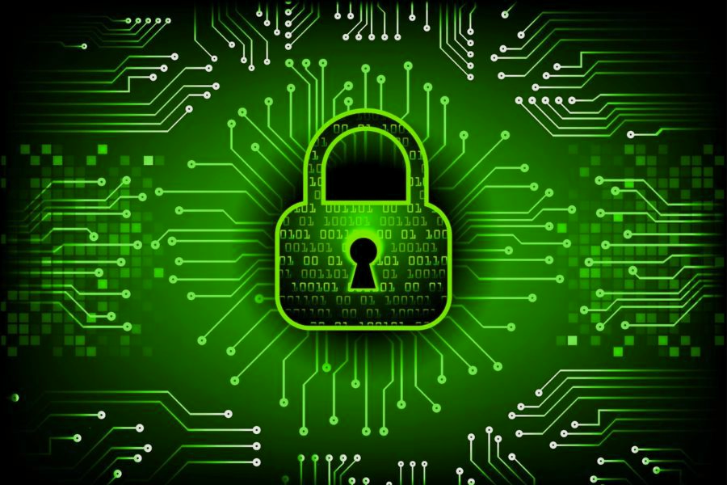

Cibersegurança: protegendo sistemas e informações
O que é Segurança da Informação?
Segurança da informação é a proteção de dados contra acesso indevido, alteração, destruição ou indisponibilidade, envolvendo pessoas, processos e tecnologia. Ela abrange informações digitais e físicas, enquanto a cibersegurança se concentra em sistemas, redes e dispositivos digitais. Sua base é a tríade CID: Confidencialidade, que permite o acesso apenas a pessoas autorizadas; Integridade, que protege os dados contra alterações indevidas; e Disponibilidade, que garante o acesso quando necessário. Na escola, isso significa proteger os dados pessoais dos alunos, impedir modificações não autorizadas nas notas e manter o portal acessível durante as matrículas.
